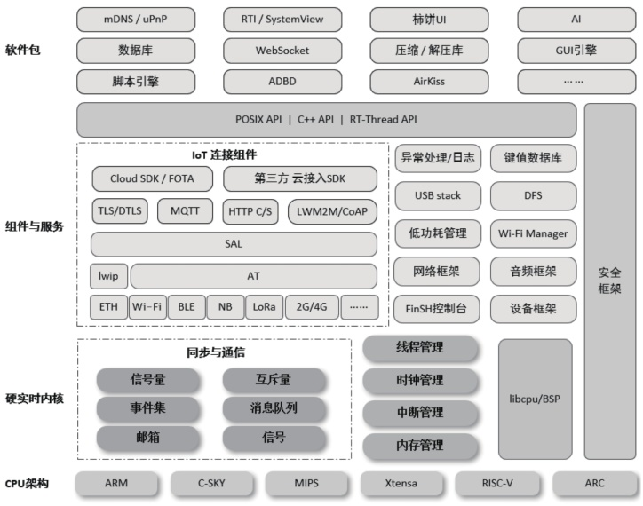
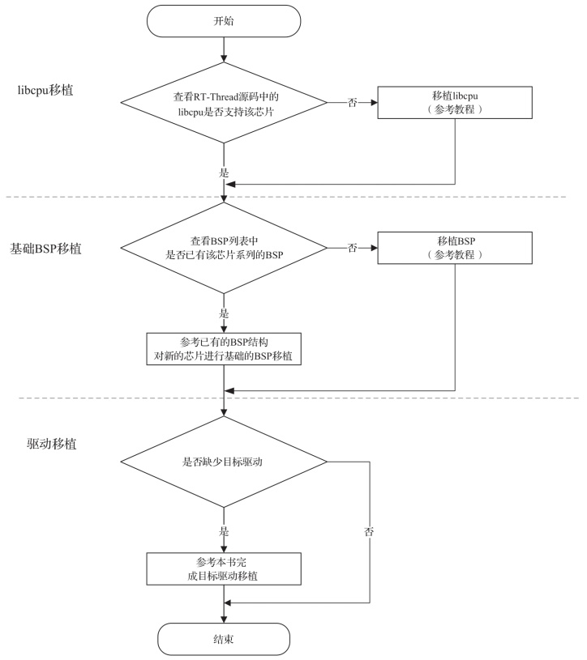

RT-Thread是什么？
RT-Thread（Real Time-Thread）是一个嵌入式实时多线程操作系统。它的基本属性之一是支持多任务，而允许多个任务同时运行并不意味着处理器在同一时刻真的执行了多个任务。
事实上，一个处理器核心在某一时刻只能运行一个任务，由于每次处理器对一个任务的执行时间很短，任务与任务之间通过任务调度器进行非常快速的切换（调度器根据优先级决定此刻该执行的任务），因此给人造成一种多个任务在同一时刻同时运行的错觉。
在 RT-Thread 系统中，任务是通过线程实现的，RT-Thread 中的线程调度器就是以上提到的任务调度器。
RT-Thread 主要采用C语言编写，浅显易懂，方便移植。它把面向对象的设计方法应用到实时系统设计中，使得代码风格优雅，架构清晰，系统模块化，且可裁剪性非常好。
RT-Thread 目前有 3 个版本：
相较于 Linux 操作系统，RT-Thread 体积小，成本低，功耗低，启动快。除此以外，RT-Thread 还具有实时性高、占用资源少等特点，非常适用于各种资源受限（如成本、功耗限制等）的场合。
物联网操作系统是指以操作系统内核（可以是 RTOS、Linux 等）为基础，包括如文件系统、图形库等较为完整的中间件组件，具备低功耗、安全特性，支持通信协议和云端连接能力的软件平台，RT-Thread 就是一个物联网操作系统。
RT-Thread 与其他很多 RTOS（如 FreeRTOS、uC/OS）的主要区别之一是，它不仅有实时内核，还具备丰富的中间层组件，如图1所示。
RT-Thread 架构具体包括以下部分。
另外内核层还包括 libcpu/BSP（芯片移植相关文件/板级支持包），它与硬件密切相关，由外设驱动和 CPU 移植文件构成。
RT-Thread 提供了开放的软件包平台。平台上存放了官方提供或开发者提供的软件包，为开发者提供了众多可重用软件包，是 RT-Thread 生态的重要组成部分。这些软件包具有很强的可重用性，模块化程度很高，可让应用开发者在最短时间内打造出自己想要的系统。
RT-Thread 支持的软件包数量已经达到 400 多个，举例如下。
另外，读者还可通过 RT-Thread Studio 创建 RT-Thread 工程，通过 IDE 下载源码并将其加入工程中。
此时还要注意一种情况，判断是否为 STM32 系列，若是，则进行 STM32 BSP 移植。可以参考 STM32 BSP 制作教程进行移植，教程链接如下：
https://www.rt-thread.org/document/site/#/rt-thread-version/rt-thread-standard/tutorial/make-bsp/stm32-bsp/stm32-bsp
事实上，一个处理器核心在某一时刻只能运行一个任务，由于每次处理器对一个任务的执行时间很短，任务与任务之间通过任务调度器进行非常快速的切换（调度器根据优先级决定此刻该执行的任务），因此给人造成一种多个任务在同一时刻同时运行的错觉。
在 RT-Thread 系统中，任务是通过线程实现的，RT-Thread 中的线程调度器就是以上提到的任务调度器。
RT-Thread 主要采用C语言编写，浅显易懂，方便移植。它把面向对象的设计方法应用到实时系统设计中，使得代码风格优雅，架构清晰，系统模块化，且可裁剪性非常好。
RT-Thread 目前有 3 个版本：
1) Nano 版
针对资源受限的 MCU（微控制器）系统，可通过方便易用的工具裁剪出仅需要 3KB Flash、1.2KB RAM 内存资源的 Nano版。2) 完整版
资源丰富的物联网设备可使用 RT-Thread 完整版。RT-Thread 完整版通过在线的软件包管理工具、系统配置工具，可实现直观、快速的模块化裁剪，无缝地导入丰富的软件功能包，实现类似 Android 的图形界面以及触摸滑动效果，还具有智能语音交互等复杂功能。3) Smart 版
带有 MMU，且基于 ARM9、ARM11 甚至 Cortex-A 系列 CPU 的应用处理器，可以使用 Smart 版本。该版本可以在 RT-Thread 操作系统的基础上启用独立、完整的进程，同时以混合微内核模式去执行。相较于 Linux 操作系统，RT-Thread 体积小，成本低，功耗低，启动快。除此以外，RT-Thread 还具有实时性高、占用资源少等特点，非常适用于各种资源受限（如成本、功耗限制等）的场合。
1. RT-Thread 许可协议
RT-Thread 系统完全开源，遵循 Apache License 2.0 开源许可协议，可以免费在商业产品中使用，并且不需要公开私有代码。2. RT-Thread 架构
近年来，物联网（Internet of Things, IoT）概念广为普及，物联网市场发展迅猛，嵌入式设备的联网已是大势所趋。终端联网使得软件复杂性大幅增加，传统的 RTOS 内核已经越来越难以满足市场的需求。在这种情况下，物联网操作系统（IoT OS）的概念应运而生。物联网操作系统是指以操作系统内核（可以是 RTOS、Linux 等）为基础，包括如文件系统、图形库等较为完整的中间件组件，具备低功耗、安全特性，支持通信协议和云端连接能力的软件平台，RT-Thread 就是一个物联网操作系统。
RT-Thread 与其他很多 RTOS（如 FreeRTOS、uC/OS）的主要区别之一是，它不仅有实时内核，还具备丰富的中间层组件，如图1所示。

图1：RT-Thread 架构
图1：RT-Thread 架构
RT-Thread 架构具体包括以下部分。
1) 硬实时内核层
RT-Thread 内核，这是 RT-Thread 的核心部分，包括了内核系统中对象的实现，例如多线程及其调度、信号量、邮箱、消息队列、内存管理、定时器等。另外内核层还包括 libcpu/BSP（芯片移植相关文件/板级支持包），它与硬件密切相关，由外设驱动和 CPU 移植文件构成。
2) 组件与服务层
组件是基于 RT-Thread 内核之上的上层软件，例如虚拟文件系统、FinSH 命令行界面、网络框架、设备框架等。采用模块化设计，能够做到组件内部高内聚，组件之间低耦合。3) 软件包层
运行于 RT-Thread 物联网操作系统平台上，是面向不同应用领域的通用软件组件，由描述信息、源代码或库文件组成。RT-Thread 提供了开放的软件包平台。平台上存放了官方提供或开发者提供的软件包，为开发者提供了众多可重用软件包，是 RT-Thread 生态的重要组成部分。这些软件包具有很强的可重用性，模块化程度很高，可让应用开发者在最短时间内打造出自己想要的系统。
RT-Thread 支持的软件包数量已经达到 400 多个，举例如下。
- 物联网相关的软件包：Paho MQTT、WebClient、mongoose、WebTerminal 等。
- 脚本语言相关的软件包：目前支持 JerryScript、MicroPython、Lua、PikaScript。
- 多媒体相关的软件包：LVGL、Openmv、mupdf、STemWin、TinyJPEG 等。
- 工具类软件包：CmBacktrace、EasyFlash、EasyLogger、SystemView。
- 系统相关的软件包：FlashDB、littlefs、MCUboot、lwext4、partition、SQLite 等。
- 外设库与驱动类软件包：各类传感器、rosserial、Nordic nRF5_SDK 等。
- 嵌入式 AI 软件包：ONNX、TensorFlow Lite、μLAPack、libann、NNoM 等。
3. RT-Thread 源码获取
RT-Thread 源码获取有几种途径。另外，读者还可通过 RT-Thread Studio 创建 RT-Thread 工程，通过 IDE 下载源码并将其加入工程中。
4. 芯片对接 RT-Thread 流程
当有一款芯片想要对接 RT-Thread 时，可以根据图2中的流程进行对接。

图2：芯片对接 RT-Thread 流程
图2：芯片对接 RT-Thread 流程
第1步
查看是否是 RT-Thread 支持的架构：- 如果是，可以开始 BSP 移植；
-
如果不是，可参照文档中心的 libcpu 移植教程进行移植，网址如下：
https://www.rt-thread.org/document/site/#/rt-thread-version/rt-thread-standard/programming-manual/porting/porting
第2步
进行 BSP 移植需要完成的基本工作如下：- 初始化 CPU 内部寄存器，设定 RAM 工作时序。
- 实现时钟驱动及中断控制器驱动，完善中断管理。
- 实现串口和 GPIO 驱动。
- 初始化动态内存堆，实现动态堆内存管理。
此时还要注意一种情况，判断是否为 STM32 系列，若是，则进行 STM32 BSP 移植。可以参考 STM32 BSP 制作教程进行移植，教程链接如下：
https://www.rt-thread.org/document/site/#/rt-thread-version/rt-thread-standard/tutorial/make-bsp/stm32-bsp/stm32-bsp
第3步
驱动移植，即参考本书中的驱动教程完成相应的驱动移植，最后进行驱动验证。关注公众号「站长严长生」，在手机上阅读所有教程，随时随地都能学习。内含一款搜索神器，免费下载全网书籍和视频。

微信扫码关注公众号